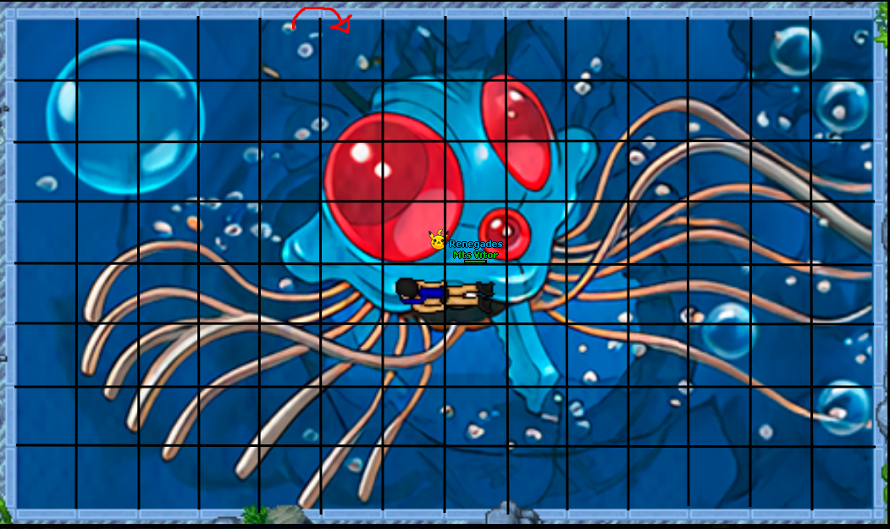
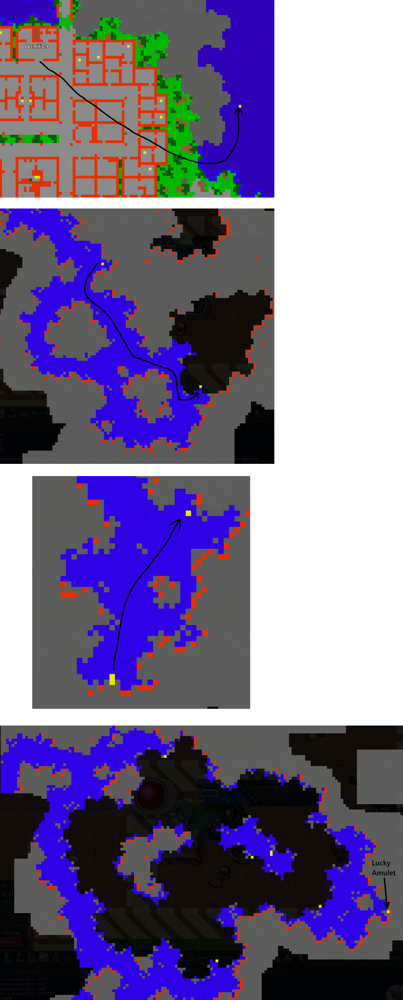

Lucky Amulet Quest
Guía consolidada de Captain Willy, el Valentine Gold Token, la entrada con Dive y el puzzle del Lucky Amulet.
¿Qué hace el Lucky Amulet?
Permite cargar un Held X-Lucky cuyo efecto se aplica de forma global a tus Pokémon. Dentro del amuleto, ese X-Lucky funciona aproximadamente al 50% de su efectividad normal.
Requisitos y preparación
- Nivel 250 o superior.
- Haber avanzado la cadena de Captain Willy.
- Pokémon con Dive para llegar al puzzle.
- Un Pokémon capaz de farmear Tentacruel.
Captain Willy y Valentine Gold Token
Está en los muelles al sur de Olivine.
Se obtiene como drop de Tentacruel.
Al completar esta etapa queda disponible el acceso al puzzle.

Entrada y puzzle submarino
La entrada se encuentra en la zona de Dive al este de Vermilion. El puzzle tiene un límite de 60 minutos y admite hasta 3 jugadores simultáneos, cada uno en su propia instancia.

La imagen se usa como referencia visual de la ruta proporcionada por la comunidad.
Transferir un X-Lucky
- Equipa el Lucky Amulet.
- Deja activo un Pokémon que tenga X-Lucky.
- En el NPC de transferencia elige mover el X-Lucky al amuleto.
- Revisa el tier antes de confirmar.
Solo X-Lucky puede transferirse de esta forma y el nuevo Held debe ser de tier superior al ya colocado. La transferencia retira el Held del Pokémon.
Retirar el Held
El NPC de eliminación de Held también puede retirar el X-Lucky del Lucky Amulet. El Held vuelve como objeto conservando su tier actual. Conviene retirarlo antes de reemplazarlo.